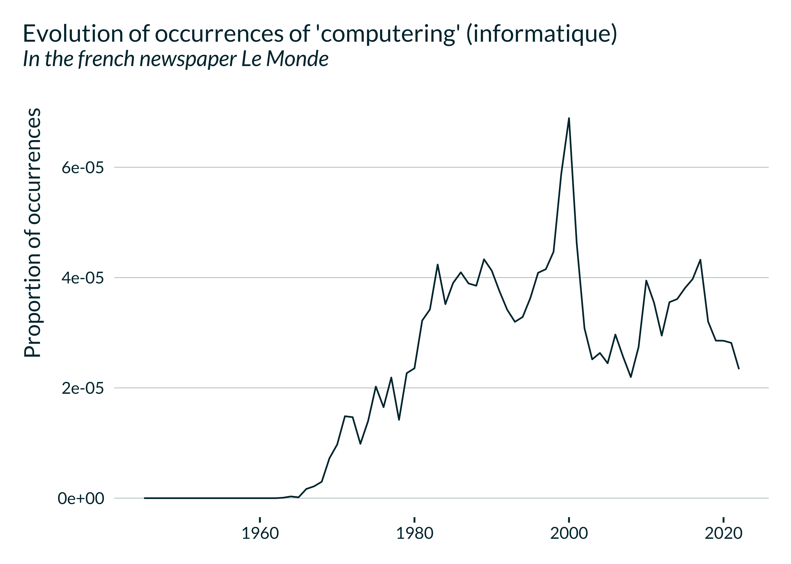
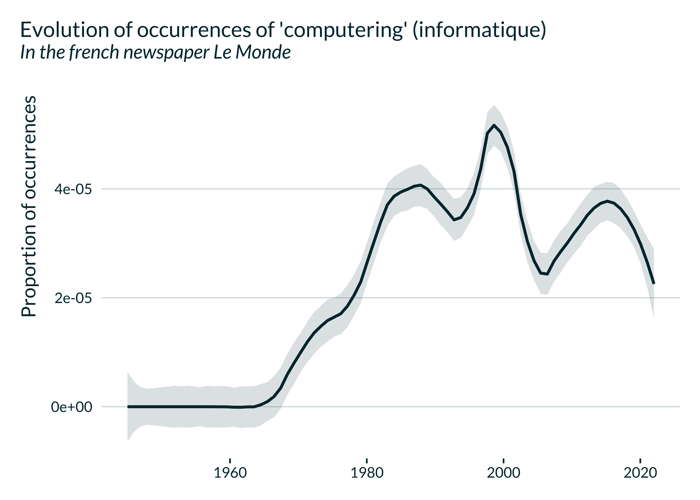

rallicagram.Rmdrallicagram is a R wrapper for the Gallicagram API. More info on
Gallicagram and its API can be found on a preprint by
Gallicagram developers Benoît de
Courson and Benjamin Azoulay, on
the “Notice” tab of the Gallicagram
website and on the API
docuemntation.
The main function in this package, gallicagram, builds a
data frame with the yearly, monthly or daily proportion of mentions of a
term in one of the three corpora between two specified dates.
This function corresponds to the Query route of the API.
ex_occur <- gallicagram(
keyword = "président",
corpus = "lemonde",
from = 1960,
to = 1970,
resolution = "monthly"
)Here is an example of part of the output:
| date | keyword | n_occur | n_grams | prop_occur | year | month | source | resolution |
|---|---|---|---|---|---|---|---|---|
| 1960-01-01 | président | 1338 | 872943 | 0.0015327 | 1960 | 1 | lemonde | monthly |
| 1960-02-01 | président | 1360 | 915672 | 0.0014852 | 1960 | 2 | lemonde | monthly |
| 1960-03-01 | président | 1461 | 928764 | 0.0015731 | 1960 | 3 | lemonde | monthly |
| 1960-04-01 | président | 1239 | 772707 | 0.0016035 | 1960 | 4 | lemonde | monthly |
| 1960-05-01 | président | 1355 | 835612 | 0.0016216 | 1960 | 5 | lemonde | monthly |
| 1960-06-01 | président | 1314 | 850245 | 0.0015454 | 1960 | 6 | lemonde | monthly |
The function gallicagram_all enables to retrieve the
yearly proportion of occurrences of a keyword in each of the corpora for
the longest time range for which the data is available and reliable.
It only takes one parameter: the keyword of interest. It then calls
gallicagram(keyword) for each corpus and for the longest
period possible for the corpus and returns a data frame with the outcome
of each call.
gallicagram_all("président")gallicagram_cooccur builds a data frame with the yearly,
monthly or daily proportion of mentions of close co-occurrences of two
keywords in one of the three corpora between two specified dates.
Close co-occurrences correspond to the number of 3-grams (4-grams in
the Le Monde corpus) that contain the two keywords. This
function corresponds to the Contain route of the API.
The parameters keyword_1 and keyword_2 take
the words to look co-occurrences for.
ex_cooccur <- gallicagram_cooccur(
keyword_1 = "président",
keyword_2 = "république",
corpus = "lemonde",
from = 1960,
to = 1970,
resolution = "monthly"
)Here is an example of part of the output:
| date | keyword_1 | keyword_2 | n_cooccur | n_ngrams | prop_cooccur | year | month | source | resolution |
|---|---|---|---|---|---|---|---|---|---|
| 1960-01-01 | président | république | 232 | 575465 | 0.0004032 | 1960 | 1 | lemonde | monthly |
| 1960-02-01 | président | république | 295 | 606116 | 0.0004867 | 1960 | 2 | lemonde | monthly |
| 1960-03-01 | président | république | 287 | 616477 | 0.0004655 | 1960 | 3 | lemonde | monthly |
| 1960-04-01 | président | république | 212 | 513816 | 0.0004126 | 1960 | 4 | lemonde | monthly |
| 1960-05-01 | président | république | 182 | 552610 | 0.0003293 | 1960 | 5 | lemonde | monthly |
| 1960-06-01 | président | république | 196 | 563800 | 0.0003476 | 1960 | 6 | lemonde | monthly |
gallicagram_associated builds a data frame with the
words most frequently used preceding or following a given ngram over the
period.
For instance “camarade” is often followed by “staline” or
“khrouchtchev” in Le Monde. The function returns the most frequent
ngrams of the form “camarade *”. Setting after = FALSE also
includes the most frequent ngrams of the form “* camarade”.
The keyword can be a 2-gram in the “books” and “press” corpora and a
3-gram in the “lemonde” corpus. Searching the “press” corpus can require
a long running time. This function corresponds to the Joker
route of the API and is
analogous to the Joker option on Ngram Viewer.
ex_associated <- gallicagram_associated(
keyword = "camarade",
corpus = "lemonde",
from = 1960,
to = 1970,
n_associated_words = 10
)The terms most often associated with “camarade” are:
| n_occur | ngram | associated_word | keyword | corpus | from | to |
|---|---|---|---|---|---|---|
| 256 | camarade de | de | camarade | lemonde | 1960 | 1970 |
| 124 | camarade khrouchtchev | khrouchtchev | camarade | lemonde | 1960 | 1970 |
| 48 | camarade dubcek | dubcek | camarade | lemonde | 1960 | 1970 |
| 44 | camarade mao | mao | camarade | lemonde | 1960 | 1970 |
| 41 | camarade et | et | camarade | lemonde | 1960 | 1970 |
| 31 | camarade waldeck | waldeck | camarade | lemonde | 1960 | 1970 |
| 27 | camarade qui | qui | camarade | lemonde | 1960 | 1970 |
| 24 | camarade du | du | camarade | lemonde | 1960 | 1970 |
| 23 | camarade togliatti | togliatti | camarade | lemonde | 1960 | 1970 |
| 22 | camarade staline | staline | camarade | lemonde | 1960 | 1970 |
We can see that some elements of this list are stopwords. Since they
are not very informative, we may want to remove them. We can do that by
supplying a list of words to ignore to the stopwords
parameter of the function. For instance, we can use the list in the
lsa package, lsa::stopwords_fr:
ex_associated_stopwords <- gallicagram_associated(
keyword = "camarade",
corpus = "lemonde",
from = 1960,
to = 1970,
n_associated_words = 10,
stopwords = lsa::stopwords_fr
)The most often associated terms excluding stopwords are:
| n_occur | ngram | associated_word | keyword | corpus | from | to |
|---|---|---|---|---|---|---|
| 124 | camarade khrouchtchev | khrouchtchev | camarade | lemonde | 1960 | 1970 |
| 48 | camarade dubcek | dubcek | camarade | lemonde | 1960 | 1970 |
| 44 | camarade mao | mao | camarade | lemonde | 1960 | 1970 |
| 31 | camarade waldeck | waldeck | camarade | lemonde | 1960 | 1970 |
| 23 | camarade togliatti | togliatti | camarade | lemonde | 1960 | 1970 |
| 22 | camarade staline | staline | camarade | lemonde | 1960 | 1970 |
Note that excluding stopwords reduces the number of associated words
returned such that it does not correspond to
nb_associated_words anymore.
In order to search several keywords at once, we can use the function
purrr::map_dfr. It takes as parameters the vector of
keywords to search, followed by the function (gallicagram)
and additional arguments to pass to the function. It returns a unique
data frame with the results for searches corresponding to each keyword,
basically binding the dataframes produced by each keyword search.
library(purrr)
keywords <- c("république", "france")
purrr::map_dfr(keywords, gallicagram,
corpus = "lemonde", from = "1960", to = "1970")Bbased on that same principle, we can run several searches at onces,
varying all parameters, not only the keyword searched. To do that, we
can specify the series of parameters in a data frame, each row
corresponding to a set of parameters to run the gallicagram
function for. We then pass this data frame to
purrr::pmap_dfr.
To specify the set of parameters, we can either build the parameters
data frame by hand. It is also often helpful to use
tidyr::crossing to create all combination of possible
searches.
params_pmap <-
tibble::tibble(
from = 1850,
to = 1870,
resolution = "yearly"
) |>
tidyr::crossing(corpus = c("press", "books")) |>
tidyr::crossing(keyword = c("république", "france"))The corresponding set of parameters to search looks like this:
| from | to | resolution | corpus | keyword |
|---|---|---|---|---|
| 1850 | 1870 | yearly | books | france |
| 1850 | 1870 | yearly | books | république |
| 1850 | 1870 | yearly | press | france |
| 1850 | 1870 | yearly | press | république |
We can then pass it to purrr::pmap_dfr that will call
the function gallicagram for each of the 4 sets of
parameters defined in the rows of params_pmap:
purrr::pmap_dfr(params_pmap, gallicagram)This method also apply for the other functions in the
rallicagram package.
One of the main usage of Gallicagram is to plot time
series of occurrences in a corpus. Here is an example graph using
ggplot (and my own ggplot theme mediocrethemes.
The use of this theme is of course not mandatory and one can remove the
line mediocrethemes::set_mediocre_all()):
library(ggplot2)
mediocrethemes::set_mediocre_all()
ex_data <- gallicagram(
keyword = "informatique",
corpus = "lemonde",
from = 1945,
to = 2022,
resolution = "yearly"
)
ex_data |>
ggplot(aes(x = date, y = prop_occur)) +
geom_line() +
labs(
title = "Evolution of occurrences of 'computering' (informatique)",
subtitle = "In the french newspaper Le Monde",
x = NULL,
y = "Proportion of occurrences"
)
We can use geom_smooth to plot smoother lines. When
using the default loess smoothing, the parameter span
controls the amount of smoothing. Larger values are associated with less
smoothing. Here is the same graph but smoothed:
ex_data |>
ggplot(aes(x = date, y = prop_occur)) +
geom_smooth(span = 0.2) +
labs(
title = "Evolution of occurrences of 'computering' (informatique)",
subtitle = "In the french newspaper Le Monde",
x = NULL,
y = "Proportion of occurrences"
)
#> `geom_smooth()` using method = 'loess' and formula = 'y ~ x'